Set-piece atlas
Every usable set piece by category, then the merge rules and every rejected piece with its reason. Click any image to open it full size.
Usable pieces by category

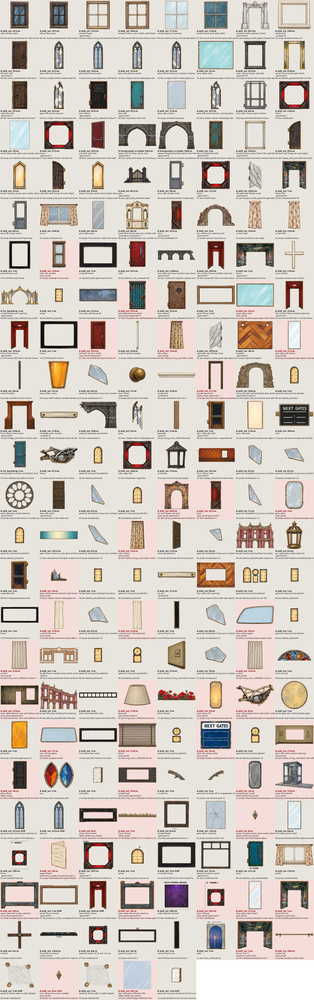


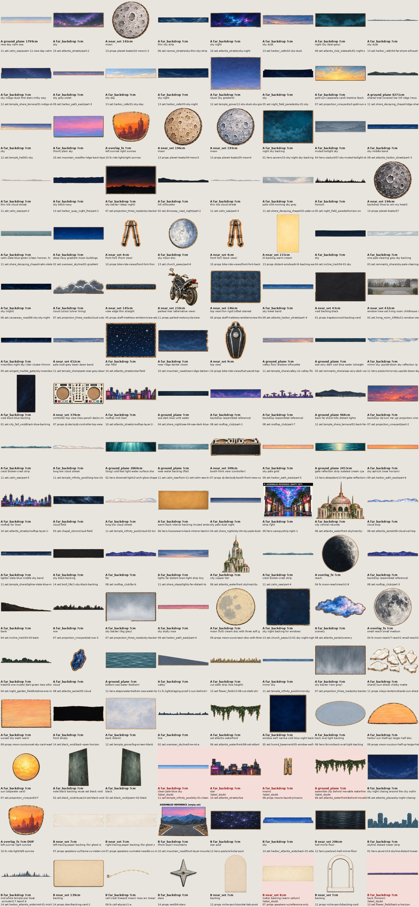

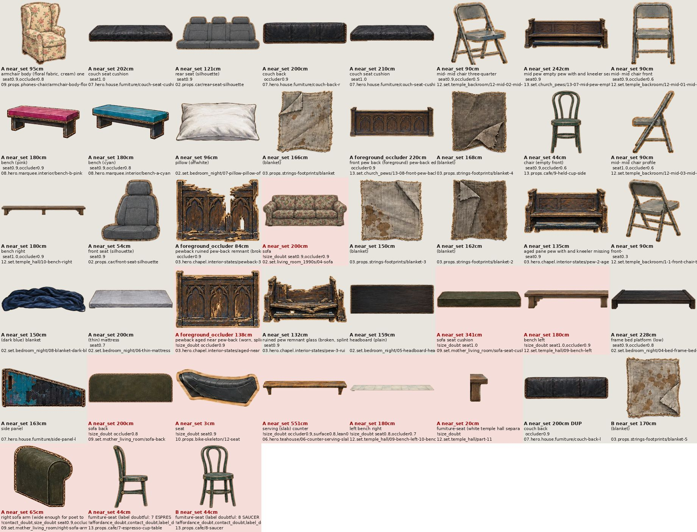

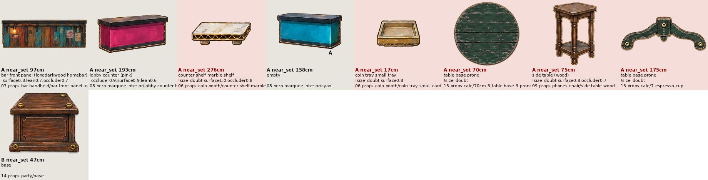

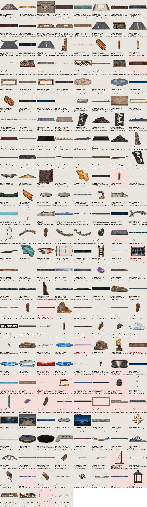

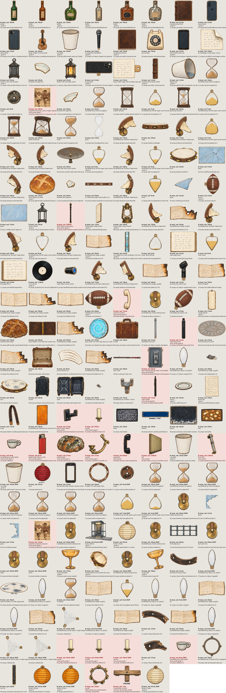

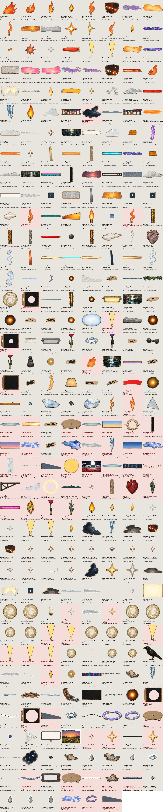

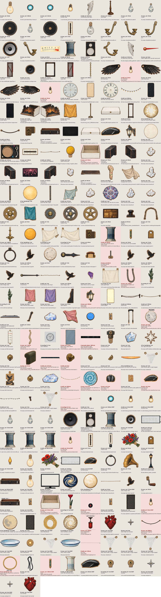

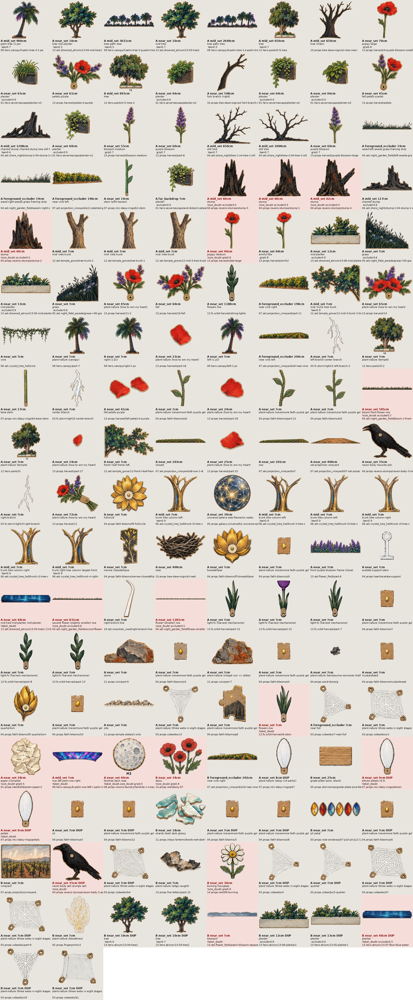

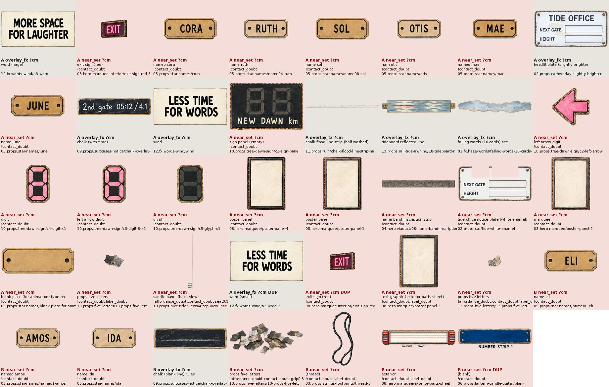

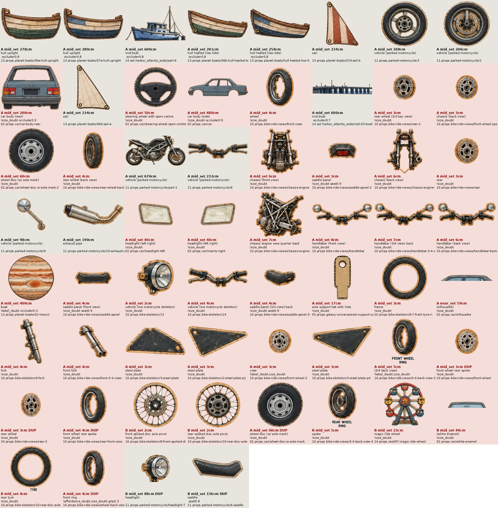

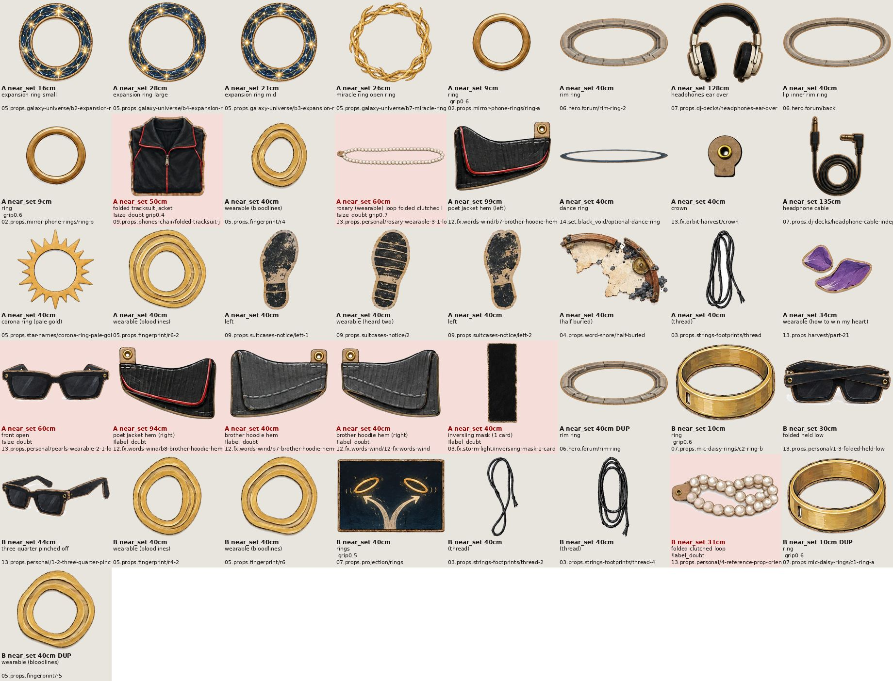